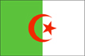
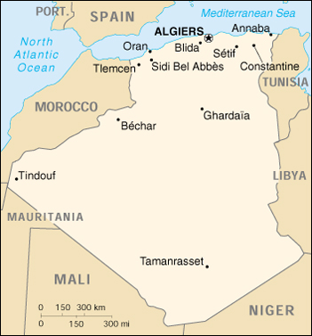

{kind=link}


| Algeria |  |
|
|  | |
| Introduction |
Background: After a century of rule by France, Algeria became independent in 1962. The surprising first round success of the fundamentalist FIS (Islamic Salvation Front) party in December 1991 balloting caused the army to intervene, crack down on the FIS, and postpone the subsequent elections. The FIS response has resulted in a continuous low-grade civil conflict with the secular state apparatus, which nonetheless has allowed elections featuring pro-government and moderate religious-based parties. FIS's armed wing, the Islamic Salvation Army, dissolved itself in January 2000 and many armed insurgents surrendered under an amnesty program designed to promote national reconciliation. Nevertheless, some residual fighting continues. Other concerns include large-scale unemployment and the need to diversify the petroleum-based economy.
| Geography |
Location: Northern Africa, bordering the Mediterranean Sea, between Morocco and Tunisia
Geographic coordinates: 28 00 N, 3 00 E
Map references: Africa
Area:
total:
2,381,740 sq km
land:
2,381,740 sq km
water:
0 sq km
Area - comparative: slightly less than 3.5 times the size of Texas
Land boundaries:
total:
6,343 km
border countries:
Libya 982 km, Mali 1,376 km, Mauritania 463 km, Morocco 1,559 km, Niger 956 km, Tunisia 965 km, Western Sahara 42 km
Coastline: 998 km
Maritime claims:
exclusive fishing zone:
32-52 nm
territorial sea:
12 nm
Climate: arid to semiarid; mild, wet winters with hot, dry summers along coast; drier with cold winters and hot summers on high plateau; sirocco is a hot, dust/sand-laden wind especially common in summer
Terrain: mostly high plateau and desert; some mountains; narrow, discontinuous coastal plain
Elevation extremes:
lowest point:
Chott Melrhir -40 m
highest point:
Tahat 3,003 m
Natural resources: petroleum, natural gas, iron ore, phosphates, uranium, lead, zinc
Land use:
arable land:
3%
permanent crops:
0%
permanent pastures:
13%
forests and woodland:
2%
other:
82% (1993 est.)
Irrigated land: 5,550 sq km (1993 est.)
Natural hazards: mountainous areas subject to severe earthquakes; mud slides
Environment - current issues: soil erosion from overgrazing and other poor farming practices; desertification; dumping of raw sewage, petroleum refining wastes, and other industrial effluents is leading to the pollution of rivers and coastal waters; Mediterranean Sea, in particular, becoming polluted from oil wastes, soil erosion, and fertilizer runoff; inadequate supplies of potable water
Environment - international agreements:
party to:
Biodiversity, Climate Change, Desertification, Endangered Species, Environmental Modification, Hazardous Wastes, Law of the Sea, Ozone Layer Protection, Ship Pollution, Wetlands
signed, but not ratified:
Nuclear Test Ban
Geography - note: second-largest country in Africa (after Sudan)
| People |
Population: 31,193,917 (July 2000 est.)
Age structure:
0-14 years:
35% (male 5,591,044; female 5,389,046)
15-64 years:
61% (male 9,582,864; female 9,381,088)
65 years and over:
4% (male 577,875; female 672,000) (2000 est.)
Population growth rate: 1.74% (2000 est.)
Birth rate: 23.14 births/1,000 population (2000 est.)
Death rate: 5.3 deaths/1,000 population (2000 est.)
Net migration rate: -0.47 migrant(s)/1,000 population (2000 est.)
Sex ratio:
at birth:
1.04 male(s)/female
under 15 years:
1.04 male(s)/female
15-64 years:
1.02 male(s)/female
65 years and over:
0.86 male(s)/female
total population:
1.02 male(s)/female (2000 est.)
Infant mortality rate: 41.97 deaths/1,000 live births (2000 est.)
Life expectancy at birth:
total population:
69.65 years
male:
68.34 years
female:
71.02 years (2000 est.)
Total fertility rate: 2.8 children born/woman (2000 est.)
Nationality:
noun:
Algerian(s)
adjective:
Algerian
Ethnic groups: Arab-Berber 99%, European less than 1%
Religions: Sunni Muslim (state religion) 99%, Christian and Jewish 1%
Languages: Arabic (official), French, Berber dialects
Literacy:
definition:
age 15 and over can read and write
total population:
61.6%
male:
73.9%
female:
49% (1995 est.)
| Government |
Country name:
conventional long form:
Democratic and Popular Republic of Algeria
conventional short form:
Algeria
local long form:
Al Jumhuriyah al Jaza'iriyah ad Dimuqratiyah ash Shabiyah
local short form:
Al Jaza'ir
Data code: AG
Government type: republic
Capital: Algiers
Administrative divisions: 48 provinces (wilayas, singular - wilaya); Adrar, Ain Defla, Ain Temouchent, Alger, Annaba, Batna, Bechar, Bejaia, Biskra, Blida, Bordj Bou Arreridj, Bouira, Boumerdes, Chlef, Constantine, Djelfa, El Bayadh, El Oued, El Tarf, Ghardaia, Guelma, Illizi, Jijel, Khenchela, Laghouat, Mascara, Medea, Mila, Mostaganem, M'Sila, Naama, Oran, Ouargla, Oum el Bouaghi, Relizane, Saida, Setif, Sidi Bel Abbes, Skikda, Souk Ahras, Tamanghasset, Tebessa, Tiaret, Tindouf, Tipaza, Tissemsilt, Tizi Ouzou, Tlemcen
Independence: 5 July 1962 (from France)
National holiday: Anniversary of the Revolution, 1 November (1954)
Constitution: 19 November 1976, effective 22 November 1976; revised 3 November 1988, 23 February 1989, and 28 November 1996; note - referendum approving the revisions of 28 November 1996 was signed into law 7 December 1996
Legal system: socialist, based on French and Islamic law; judicial review of legislative acts in ad hoc Constitutional Council composed of various public officials, including several Supreme Court justices; has not accepted compulsory ICJ jurisdiction
Suffrage: 18 years of age; universal
Executive branch:
chief of state:
President Abdelaziz BOUTEFLIKA (since 28 April 1999)
head of government:
Prime Minister Ahmed BENBITOUR (since 2 December 1999)
cabinet:
Council of Ministers appointed by the prime minister
elections:
president elected by popular vote for a five-year term; election last held 15 April 1999 (next to be held NA April 2004); prime minister appointed by the president
election results:
Abdelaziz BOUTEFLIKA elected president; percent of vote - Abdelaziz BOUTEFLIKA 70%; note - six of the seven candidates withdrew sighting persistent electoral fraud
Legislative branch:
bicameral Parliament consists of the National People's Assembly or Al-Majlis Ech-Chaabi Al-Watani (380 seats; members elected by popular vote to serve four-year terms) and the Council of Nations (144 seats; one-third of the members appointed by the president, two-thirds elected by indirect vote; members serve six-year terms; created as a result of the constitutional revision of November 1996)
elections:
National People's Assembly - last held 5 June 1997 (next to be held NA 2001); elections for two-thirds of the Council of Nations - last held 25 December 1997 (next to be held NA 2003)
election results:
National People's Assembly - percent of vote by party - RND 40.8%, MSP 18.2%, FLN 16.8%, Nahda Movement 8.9%, FFS 5%, RCD 5%, PT 1.1%, Republican Progressive Party 0.8%, Union for Democracy and Freedoms 0.3%, Liberal Social Party 0.3%, independents 2.8%; seats by party - RND 156, MSP 69, FLN 62, Nahda Movement 34, FFS 20, RCD 19, PT 4, Republican Progressive Party 3, Union for Democracy and Freedoms 1, Liberal Social Party 1, independents 11; Council of Nations - percent of vote by party - NA%; seats by party - RND 80, FLN 10, FFS 4, MSP 2 (remaining 48 seats appointed by the president, party breakdown NA)
Judicial branch: Supreme Court (Cour Supreme)
Political parties and leaders:
Algerian Democratic Front or FAD [Sid-Ahmed GHOZALI]; Algerian National Front or ANF [Moussa TOUATI]; Algerian Renewal Party or PRA [Noureddine BOUKROUH, chairman]; Democratic National Rally or RND [Ahmed OUYAHIA, chairman]; Islamic Salvation Front or FIS (outlawed April 1992) [Ali BELHADJ, Dr. Abassi MADANI, Rabeh KEBIR (self-exile in Germany)]; Liberal Social Party [Ahmed KHELIL]; Movement for Democracy in Algeria or MDA [Ahmed Ben BELLA]; Movement for Loyalty and Justice [Ahmed Taleb IBRAHIMI, president; Movement of a Peaceful Society or MSP [Mahfoud NAHNAH, chairman]; Nahda Movement or Al Nahda [Abdallah DJABALLAH, president]; National Liberation Front or FLN [Boualem BENHAMOUDA, secretary general]; National Party for Solidarity and Development or PNSD [Rabah BENCHERIF]; National Republican Alliance or ANR [Redha MALEK]; Rally for Culture and Democracy or RCD [Said SAADI, secretary general]; Republican Progressive Party [Khadir DRISS]; Social Democratic Movement or MDS [Hachemi CHERIF]; Socialist Forces Front or FFS [Hocine Ait AHMED, secretary general (self-exile in Switzerland)]; Union for Democracy and Freedoms [Mouley BOUKHALAFA]; Workers Party or PT [Louisa HANOUN]
note:
the government established a multiparty system in September 1989 and, as of 31 December 1990, over 50 legal parties existed; a new party law was enacted in March 1997
International organization participation: ABEDA, AfDB, AFESD, AL, AMF, AMU, CCC, ECA, FAO, G-15, G-19, G-24, G-77, IAEA, IBRD, ICAO, ICFTU, ICRM, IDA, IDB, IFAD, IFC, IFRCS, IHO, ILO, IMF, IMO, Inmarsat, Intelsat, Interpol, IOC, IOM (observer), ISO, ITU, MONUC, NAM, OAPEC, OAS (observer), OAU, OIC, OPCW, OPEC, OSCE (partner), UN, UNCTAD, UNESCO, UNHCR, UNIDO, UPU, WCL, WHO, WIPO, WMO, WToO, WTrO (applicant)
Diplomatic representation in the US:
chief of mission:
Ambassador Idriss JAZAIRY
chancery:
2118 Kalorama Road NW, Washington, DC 20008
telephone:
[1] (202) 265-2800
FAX:
[1] (202) 667-2174
Diplomatic representation from the US:
chief of mission:
Ambassador Cameron R. HUME
embassy:
4 Chemin Cheikh Bachir El-Ibrahimi, Algiers
mailing address:
B. P. Box 549, Alger-Gare, 16000 Algiers
telephone:
[213] (2) 69-11-86, 69-12-55, 69-18-54, 69-38-75
FAX:
[213] (2) 69-39-79
Flag description: two equal vertical bands of green (hoist side) and white with a red, five-pointed star within a red crescent; the crescent, star, and color green are traditional symbols of Islam (the state religion)
| Economy |
Economy - overview: The hydrocarbons sector is the backbone of the economy, accounting for roughly 52% of budget revenues, 25% of GDP, and over 95% of export earnings. Algeria has the fifth-largest reserves of natural gas in the world and is the second largest gas exporter; it ranks fourteenth for oil reserves. Algiers' efforts to reform one of the most centrally planned economies in the Arab world stalled in 1992 as the country became embroiled in political turmoil. Burdened with a heavy foreign debt, Algiers concluded a one-year standby arrangement with the IMF in April 1994 and the following year signed onto a three-year extended fund facility which ended 30 April 1998. Some progress on economic reform, Paris Club debt reschedulings in 1995 and 1996, and oil and gas sector expansion contributed to a recovery in growth since 1995. Still, the economy remains heavily dependent on volatile oil and gas revenues. The government has continued efforts to diversify the economy by attracting foreign and domestic investment outside the energy sector, but has had little success in reducing high unemployment and improving living standards.
GDP: purchasing power parity - $147.6 billion (1999 est.)
GDP - real growth rate: 3.9% (1999 est.)
GDP - per capita: purchasing power parity - $4,700 (1999 est.)
GDP - composition by sector:
agriculture:
12%
industry:
51%
services:
37% (1997 est.)
Population below poverty line: 23% (1999 est.)
Household income or consumption by percentage share:
lowest 10%:
2.8%
highest 10%:
26.8% (1995)
Inflation rate (consumer prices): 4.2% (1999 est.)
Labor force: 9.1 million (2000 est.)
Labor force - by occupation: government 29.5%, agriculture 22%, construction and public works 16.2%, industry 13.6%, commerce and services 13.5%, transportation and communication 5.2% (1989)
Unemployment rate: 30% (1999 est.)
Budget:
revenues:
$15.5 billion
expenditures:
$15.1 billion, including capital expenditures of $NA (1999 est.)
Industries: petroleum, natural gas, light industries, mining, electrical, petrochemical, food processing
Industrial production growth rate: 7% (1999 est.)
Electricity - production: 21.38 billion kWh (1998)
Electricity - production by source:
fossil fuel:
99.77%
hydro:
0.23%
nuclear:
0%
other:
0% (1998)
Electricity - consumption: 19.882 billion kWh (1998)
Electricity - exports: 313 million kWh (1998)
Electricity - imports: 312 million kWh (1998)
Agriculture - products: wheat, barley, oats, grapes, olives, citrus, fruits; sheep, cattle
Exports: $13.7 billion (f.o.b., 1999 est.)
Exports - commodities: petroleum, natural gas, and petroleum products 97%
Exports - partners: Italy 21.2%, US 15.0%, France 12.9%, Spain 10.3%, Brazil 5.9%, Netherlands 5.5% (1998)
Imports: $9.3 billion (f.o.b., 1999 est.)
Imports - commodities: capital goods, food and beverages, consumer goods
Imports - partners: France 29.5%, Italy 9.8%, US 7.2%, Spain 6.8%, Germany 6.2%, Canada 4.1% (1998)
Debt - external: $30 billion (1999 est.)
Economic aid - recipient: $897.5 million (1994)
Currency: 1 Algerian dinar (DA) = 100 centimes
Exchange rates: Algerian dinars (DA) per US$1 - 69.046 (January 2000), 66.574 (1999), 58.739 (1998), 57.707 (1997), 54.749 (1996), 47.663 (1995)
Fiscal year: calendar year
| Communications |
Telephones - main lines in use: 1.176 million (1995)
Telephones - mobile cellular: 33,500 (1999)
Telephone system:
domestic:
good service in north but sparse in south; domestic satellite system with 12 earth stations (20 additional domestic earth stations are planned)
international:
5 submarine cables; microwave radio relay to Italy, France, Spain, Morocco, and Tunisia; coaxial cable to Morocco and Tunisia; participant in Medarabtel; satellite earth stations - 2 Intelsat (1 Atlantic Ocean and 1 Indian Ocean), 1 Intersputnik, and 1 Arabsat
Radio broadcast stations: AM 25, FM 1, shortwave 8 (1999)
Radios: 7.1 million (1997)
Television broadcast stations: 18 (not including low-power stations) (1999)
Televisions: 3.1 million (1997)
Internet Service Providers (ISPs): 1 (1999)
| Transportation |
Railways:
total:
4,820 km (301 km electrified; 215 km double track)
standard gauge:
3,664 km 1.435-m gauge (301 km electrified; 215 km double track)
narrow gauge:
1,156 km 1.055-m gauge (1996)
Highways:
total:
104,000 km
paved:
71,656 km (including 640 km of expressways)
unpaved:
32,344 km (1996 est.)
Pipelines: crude oil 6,612 km; petroleum products 298 km; natural gas 2,948 km
Ports and harbors: Algiers, Annaba, Arzew, Bejaia, Beni Saf, Dellys, Djendjene, Ghazaouet, Jijel, Mostaganem, Oran, Skikda, Tenes
Merchant marine:
total:
78 ships (1,000 GRT or over) totaling 940,196 GRT/1,094,104 DWT
ships by type:
bulk 9, cargo 27, chemical tanker 7, liquified gas 11, petroleum tanker 5, roll-on/roll-off 13, short-sea passenger 5, specialized tanker 1 (1999 est.)
Airports: 137 (1999 est.)
Airports - with paved runways:
total:
51
over 3,047 m:
8
2,438 to 3,047 m:
25
1,524 to 2,437 m:
12
914 to 1,523 m:
5
under 914 m:
1 (1999 est.)
Airports - with unpaved runways:
total:
86
2,438 to 3,047 m:
3
1,524 to 2,437 m:
23
914 to 1,523 m:
41
under 914 m:
19 (1999 est.)
Heliports: 1 (1999 est.)
| Military |
Military branches: National Popular Army, Navy, Air Force, Territorial Air Defense, National Gendarmerie
Military manpower - military age: 19 years of age
Military manpower - availability:
males age 15-49:
8,523,257 (2000 est.)
Military manpower - fit for military service:
males age 15-49:
5,220,318 (2000 est.)
Military manpower - reaching military age annually:
males:
373,547 (2000 est.)
Military expenditures - dollar figure: $1.3 billion (FY94)
Military expenditures - percent of GDP: 2.7% (FY94)
| Transnational Issues |
Disputes - international: part of southeastern region claimed by Libya